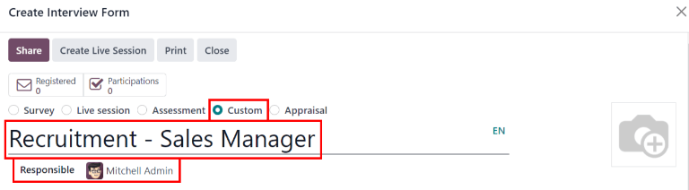
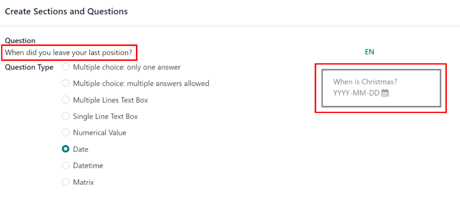
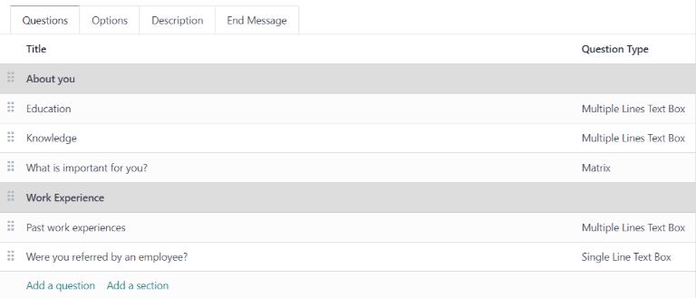
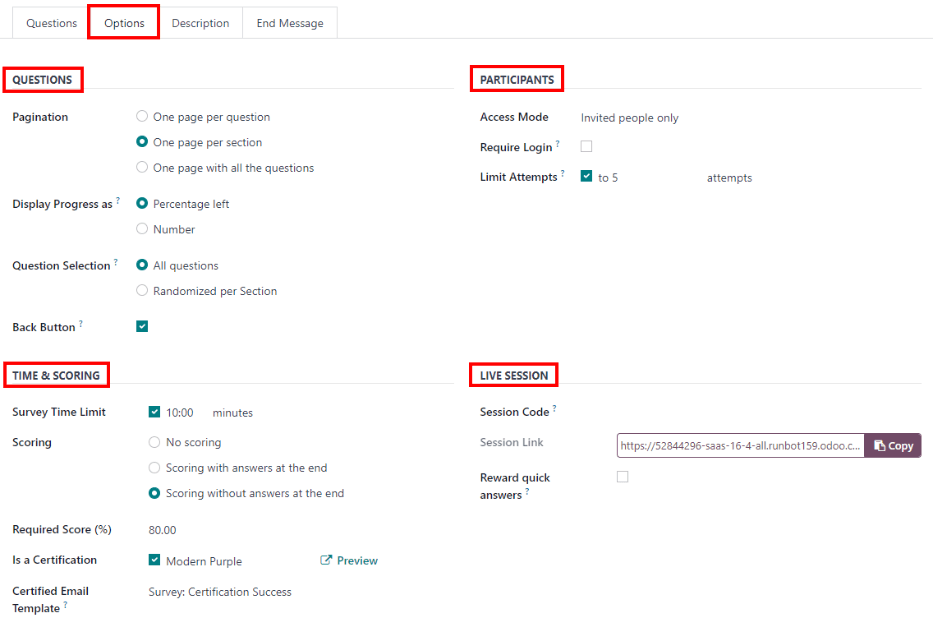

Puestos de trabajo¶
En la vista de tablero predeterminada de podrá ver todos los puestos de trabajo, no importa el estado. Se mostrarán los puestos de trabajo que estén publicados y tengan postulantes, así como las que se crearon previamente pero ya no están publicadas.
Cada puesto de trabajo se muestra en una tarjeta individual de la vista kanban. Si el puesto de trabajo está activo y las personas pueden postularse, entonces aparecerá una cinta en la esquina superior derecha del panel.
Haga clic en cualquier parte de la tarjeta del puesto de trabajo para ver los candidatos.
Crear un nuevo puesto de trabajo¶
Para crear un nuevo puesto de trabajo desde el tablero de Reclutamiento haga clic en el botón Crear en la esquina superior izquierda.
Después, aparecerá una ventana emergente titulada Crear un puesto de trabajo. Desde ahí, ingrese el nombre del puesto (como Gerente de ventas, Ingeniero mecánico, etc). Al completarla, haga clic en el botón Crear`para guardar el puesto o en :guilabel:`Descartar para borrarlo.

Una vez que haya creado el puesto de trabajo, aparecerá como un panel en la vista de kanban en el tablero principal de Reclutamiento.
Editar un puesto de trabajo nuevo¶
Una vez que cree el puesto de trabajo, tiene que ingresar los detalles de la posición. Haga clic en el icono ⋮ (tres puntos) que se encuentra en la esquina superior derecha del panel en cuestión para mostrar varias opciones. Después, haga clic en Configuración para editar los detalles.

Ingrese la descripción de trabajo en la pestaña Resumen del trabajo. Esta es la información que los posibles candidatos verán al buscar puestos de trabajo disponibles.
Reclutamiento¶
Podrá encontrar toda la información básica sobre el puesto de trabajo en la pestaña Reclutamiento. Ninguno de los campos es obligatorio, pero es buena idea poner al menos un par de detalles, como dónde se encuentran las oficinas.
Puede llenar los campos como se muestra aquí:
Departamento: seleccione el departamento del puesto de trabajo.
Lugar de trabajo: seleccione la dirección donde se llevará a cabo el trabajo.
Tipo de empleo: seleccione qué tipo de puesto e este trabajo, ya sea Tiempo completo, Medio tiempo, etc.
Empresa: seleccione la empresa correspondiente al trabajo.
Objetivo: ingrese el número de empleados que se contratarán para ese puesto.
Está publicado: active esta opción para publicar este puesto en línea.
Sitio web: seleccione el sitio web donde se publicará el puesto de trabajo.
Reclutador: seleccione quién se encargará del reclutamiento para este puesto.
Entrevistadores: seleccione a las personas que deben realizar las entrevistas. Puede seleccionar a más de una persona.
Formulario de la entrevista: seleccione el formulario de entrevista que los postulantes deberán completar antes de la entrevista.
Plantilla de contrato: seleccione una plantilla de contrato que se usará al ofrecerle el trabajo a un candidato.
Sección detalles del proceso: esta sección contiene información que se muestra en línea para el puesto de trabajo. En ella se informa a los candidatos del calendario y los pasos del proceso de contratación, para que sepan cuándo pueden esperar una respuesta.
Tiempo para responder: ingrese el número de días antes de que se contacte al candidato.
Procesar: ingrese las etapas por las que tiene que pasar el candidato durante el proceso de reclutamiento.
Días para recibir una oferta: proporcione el número de días antes de que el candidato deba esperar una oferta una vez concluido el proceso de reclutamiento.
Nota
La sección detalles del proceso es un campo de texto. Todas las respuestas se escriben en lugar de seleccionarse de un menú desplegable. El texto se muestra en el sitio web exactamente como aparece en esta pestaña.

Crear un formulario para la entrevista¶
Un Formulario de entrevista se utiliza para determinar si un candidato es adecuado para un puesto de trabajo. Los formularios de entrevista pueden ser tan específicos o generales como se desee, y pueden adoptar la forma de una certificación, un examen o un cuestionario general. Los formularios de entrevista los determina el equipo de contratación.
Siempre que tendrá que crear los formularios de entrevistas, no hay formularios pre-configurados en Odoo. Para crear un formulario de entrevista, comience desde la pestaña de reclutamiento del formulario Puesto de Trabajo. En el campo Formulario de Entrevista, introduzca un nombre para el nuevo formulario de entrevista. A medida que se escribe el nombre, aparecen varias opciones debajo de la entrada, Crear (nombre del formulario de entrevista), Ver todos, y Crear y editar…. Haga clic en Crear y editar… y aparecerá una ventana emergente Crear formulario de entrevista.
Nota
La opción Ver todos solo aparece si hay algún formulario de entrevista ya creado. Si no existen formularios de entrevista, las únicas opciones disponibles son Crear (nombre del formulario de entrevista), y Crear y editar….
Primero introduzca un nombre para el formulario en el campo Nombre, el cual debe indicar cuándo se tiene que usar el formulario. Por ejemplo, ¿se trata de un formulario específico para un puesto de trabajo, o es un formulario general que puede utilizarse para todas las entrevistas?
A continuación, seleccione qué tipo de formulario de entrevista se está creando. El valor predeterminado que ya estará seleccionado es Personalizado. Las distintas opciones son Encuesta, Sesión en vivo, Evaluación, Personalizado y Valoración.
Después seleccione a la persona responsable del formulario desde el menú desplegable en el campo Responsable.
Si lo desea, puede añadir una imagen al formulario de la entrevista. Pase el ratón sobre el icono de la cámara en el extremo derecho y aparecerá el icono ✏️ (lápiz). Haga clic en el icono ✏️ (lápiz) y aparecerá una ventana del explorador de archivos. Navegue hasta el archivo de imagen deseado y haga clic en Abrir para seleccionarlo.
Cuestionario¶
En la pestaña Preguntas haga clic en Agregar una sección para agregar una sección al formulario. Aparecerá una línea y podrá ingresar el encabezado de la sección. Una vez que lo complete, haga clic fuera de la línea o presione la tecla enter para guardar la nueva sección del formulario.
Después, haga clic en Agregar una pregunta para agregar una pregunta a la sección. Aparecerá la ventana emergente con el nombre Crear secciones y preguntas, allí podrá ingresar los detalles de la pregunta. Escriba la pregunta en la línea superior.
Hay varios tipos de pregunta de los que puede elegir:
Opción múltiple: solo una respuesta: una pregunta de opción múltiple en la que el candidato solo puede seleccionar una respuesta.
Opción múltiple: se permiten varias respuestas: una pregunta de opción múltiple en la que el candidato puede seleccionar varias respuestas.
Cuadro de texto con varias líneas: permite que el candidato ingrese varias líneas de texto.
Cuadro de texto de una línea: el candidato solo podrá ingresar una línea.
Valor numérico: solo acepta valores numéricos.
Fecha: se mostrará un módulo de calendario para seleccionar la fecha.
Fecha y hora: aparecen un calendario y un reloj para seleccionar la fecha y la hora.
Matriz: una tabla personalizable que permite que el candidato seleccione una respuesta de cada fila.
Después de seleccionar el tipo de pregunta, aparecerá una pregunta de ejemplo en gris. Esto representa cómo verán la pregunta los candidatos.
Puede cambiar la organización de preguntas y secciones. Para moverlas, haga clic y arrastre a donde quiera los encabezados de secciones o líneas de preguntas.
Puede diferenciar las secciones por su fondo gris, mientras que las preguntas tienen un fondo blanco.
Respuestas¶
Si selecciona Opción múltiple: solo una respuesta, Opción múltiple: se permiten varias respuestas, Cuadro de texto de una línea, o Matriz como Tipo de pregunta, aparecerá una pestaña de Respuestas debajo de la pregunta. Si selecciona otro tipo de pregunta, la pestaña de Respuestas se mantendrá oculta.
Tanto para el tipo Opción múltiple: solo una respuesta como para el tipo Opción múltiple: se permiten varias respuestas las respuestas se llenan de la misma manera.
Primero, en la pestaña de Respuestas haga clic en Agregar una línea. Aparecerá una lína donde se podrá ingresar una respuesta. Después de escribir la respuesta, haga clic fuera de la línea, o presione enter para bloquear una respuesta nueva en el formulario y permitir que aparezca otra línea de respuesta.
Es posible adjuntar una imagen a la respuesta si así lo desea. Haga clic en una línea para seleccionarla, aparecerá el botón Suba su archivo en el lado derecho y después haga clic allí. Aparecerá una ventana del explorador de archivos, ahí busque el archivo correspondiente a la imagen, selecciónelo y haga clic en Abrir para seleccionarlo.
Repita esta operación con todas las respuestas que desee añadir a la pregunta de respuesta múltiple. Las respuestas pueden reorganizarse en cualquier orden, para hacerlo, haga clic en los seis cuadrados pequeños situados en el extremo izquierdo de cada línea de respuesta y arrastre la respuesta a la posición deseada. El orden en que aparecen las respuestas en el formulario es el orden en que aparecerán en línea.
Si desea eliminar una línea, haga clic en el icono 🗑️ (papelera) ubicado en el extremo derecho de la línea de respuesta.

Si selecciona el tipo de pregunta Cuadro de texto de una línea solo aparecerán dos casillas en la pestaña de Respuestas.
La entrada debe ser un correo electrónico: active esta opción si la respuesta debe tener formato de dirección de correo electrónico.
Guardar como correo electrónico de usuario: esta opción solo aparece si selecciona La entrada debe ser un correo electrónico, esto almacenará el correo electrónico del formulario como el correo electrónico de un usuario y se usará siempre que Odoo contacte al usuario por correo electrónico.
Guardar como apodo de usuario: active esta opción para completar la respuesta con el apodo del usuario. Esto se almacena y se utiliza en cualquier lugar en el que Odoo utiliza un apodo.
A veces se formula una pregunta que no se ajusta a un formato de respuesta estándar y que se adapta mejor a una matriz. Por ejemplo, preguntar a un candidato cuál es su disponibilidad para trabajar en comparación con los distintos turnos es una pregunta perfecta para un formato matricial. En este ejemplo, un candidato puede hacer clic en todos los turnos en los que está disponible para trabajar.
Para un tipo de pregunta Matriz, hay que introducir dos conjuntos de datos. Tanto las filas como las columnas deben estar configuradas. Las columnas se representan en la sección Opciones, mientras que las filas se configuran en la sección Filas.
El método para completar ambas secciones es el mismo. En la pestaña Respuestas haga clic en Agregar una línea en la sección Opciones o Fila. Aparecerá una línea y podrá escribir una respuesta, después haga clic fuera de la línea o presione la tecla enter para bloquear la nueva respuesta en el formulario y que aparezca otra línea de respuesta. Repita este procedimiento para todas las respuestas de las secciones Opciones y Filas.

Este es una matriz de ejemplo en la que se le pide al aplicante qué turnos están disponibles para trabajar en sábados y domingos, ya sea en la mañana, tarde o noche.¶
Descripción¶
Ingrese cualquier información que pueda servirle al postulante. Esta descripción aparecerá solo para esta pregunta, por lo que la información debería ser específica a la pregunta y no generalizada.
Opciones¶
Para ver las opciones disponibles para una pregunta, haga clic en la pestaña Opciones. Las secciones Diseño, Restricciones y Sesiones en vivo se encuentran en todos los Tipos de pregunta, mientras que la pestaña Respuestas depende del Tipo de pregunta seleccionado y cambia según la selección.
Respuestas¶
Opción múltiple: solo una respuesta y Opción múltiple: se permiten varias respuestas: aparece la opción de Mostrar campo de comentarios. Active la opción para permitir que el postulante responda la pregunta escribiendo una respuesta (o comentario). Si se activa, aparecerá un campo de Mensaje del comentario y El comentario es una respuesta. Ingrese el texto que aparecerá en el campo de Mensaje del comentario. Esto debería ser un comentario útil para el solicitante, como
Si es otro, por favor especifique. Por último, si el comentario debe registrarse como la respuesta del solicitante, active la casilla.Cuadro de texto con varias líneas: aparece un campo Marcador de posición. Ingrese cualquier texto que deba aparecer con la pregunta para ayudar a aclarar cómo debe responder el postulante.
Cuando se selecciona la opción Cuadro de texto de una línea y Valor numérico, aparece la opción Validar entrada. Active esta opción si lo que el solicitante ingresa debe ser un valor numérico y necesita verificarse. La respuesta solo puede verificarse si es una entrada numérica. Al activar esta opción aparecerán varias opciones; ingrese los valores para los límites mínimos y máximos en los dos campos. A continuación, ingrese el texto que aparece cuando la respuesta dada no se ajusta a los parámetros mínimos y máximos designados. Por último, ingrese cualquier texto en el campo Marcador de posición para proporcionar información adicional o instrucciones para ayudar al solicitante.
Fecha y Fecha y hora: aparece una opción de Validar entrada. Active esta opción si la respuesta del solicitante necesita ser verificada. Cuando está activada, aparecen varias otras opciones; ingrese los rangos de fechas para los límites mínimos o máximos en los dos campos. Haga clic en un campo, ya sea el mínimo o el máximo, y aparecerá un calendario, donde podrá seleccionar las fechas para los campos correspondientes. A continuación, ingrese el texto que aparece cuando la respuesta dada no se ajusta a las fechas mínimas y máximas designadas. Por último, ingrese cualquier texto en el campo Marcador de posición para proporcionar información adicional o instrucciones para ayudar al solicitante.
Matriz: la primera opción que aparece es Tipo de matriz. Seleccione Una opción por fila o Varias opciones por fila utilizando el menú desplegable. La siguiente opción es Mostrar campo de comentarios, active esta opción si desea mostrar un comentario al solicitante. Si se activa, aparecerá un campo de Mensaje del comentario y El comentario es una respuesta. Ingrese el texto que aparecerá en el campo de Mensaje del comentario. Esto debería ser un comentario útil para el solicitante, como
Si es otro, por favor especifique. Por último, si el comentario debe registrarse como la respuesta del solicitante, active la casilla.
Restricciones¶
Si es obligatorio que el postulante responda la pregunta, seleccione la casilla que se encuentra a un lado de Respuesta obligatoria. Aparecerá el campo Mensaje de error con un texto de ejemplo en gris (Esta pregunta requiere una respuesta.). Escriba el mensaje que debe aparecer si el postulante intenta continuar con la siguiente pregunta sin haber respondido esta. El texto debe explicar que es obligatorio responder a la pregunta.
Diseño¶
Si la pregunta sólo debe aparecer si se responde a una pregunta anterior de una forma específica, active la opción Visualización condicional. Aparecerá un nuevo campo Pregunta desencadenante. Mediante el menú desplegable, seleccione la pregunta anterior a la que está vinculada esta nueva pregunta. Una vez seleccionada una pregunta anterior, aparece un campo Respuesta desencadenante. Seleccione la respuesta que debe seleccionarse para que aparezca la nueva pregunta.
Example
Para entender mejor qué es una pregunta desencadenante, el siguiente es un ejemplo aplicable al proceso de reclutamiento. La pregunta, ¿Tiene experiencia en gestión de equipos de venta? ya está agregada, después se agrega una nueva pregunta, ¿Cuántos años de experiencia?. Esta pregunta debe aparecer solo si el postulante seleccionó Sí a la pregunta ¿Tiene experiencia previa en gestión de equipos de venta?.
Seleccione la opción Visualización condicional para configurar este ejemplo de forma adecuada. Después, seleccione ¿Tiene experiencia en gestión de equipos de ventas? como la Pregunta desencadenante y elija Sí como la respuesta desencadenante.
Sesiones en vivo¶
Si la pregunta es para una sesión en vivo, active la opción Límite de tiempo de preguntas y aparecerá un campo de segundos. Ingrese la cantidad de tiempo que tiene el candidato para responder la pregunta, en segundos.
Opciones¶
Después configure las múltiples opciones para el formulario de entrevista. Haga clic en la pestaña Opciones para ver todas las opciones que puede configurar por categoría.
Cuestionario¶
Paginación: elija cómo deben aparecer las preguntas.
Una página por pregunta: muestre solo una pregunta por página.
Una página por sección: muestre cada sección con sus respectivas preguntas en una página distinta.
Una página con todas las preguntas: muestra todas las secciones y preguntas al mismo tiempo.
Mostrar progreso como: elija cómo mostrar el porcentaje de preguntas que quedan por responder. Esta opción sólo aparece si se ha seleccionado Una página por pregunta o Una página por sección en Paginación.
Porcentaje restante: muestre la cantidad restante en un porcentaje (%).
Número: mostrar la cantidad restante en valores numéricos.
Selección de preguntas: seleccione qué preguntas se van a presentar.
Todas las preguntas: mostrar el formulario completo, con todas las preguntas de todas las secciones.
Aleatorio por sección: mostrar solo una selección aleatoria de cada sección.
Botón de retroceso: active esta opción si el postulante puede hacer clic en el botón de retroceso para regresar a las preguntas previas.
Nota
Aunque es una opción seleccionable, la opción Aleatorio por sección solo debe utilizarse si será posible recibir información parcial/una encuesta incompleta de cada solicitante.
Tiempo y puntuación¶
Límite de tiempo de la encuesta: active esta opción para limitar el tiempo que el candidato tendrá para completar el formulario. Al seleccionarlo, aparecerá un campo a un lado de la casilla marcada donde tendrá que ingresar los minutos. Ingrese el tiempo en el campo (usando el formuato XX:XX minutos/segundos).
Puntaje: seleccione cómo se deben puntuar las preguntas.
Sin puntaje: seleccione esta opción para no puntear el formulario.
Puntaje con respuestas al final: seleccione esta opción para puntuar el formulario y mostrar las respuestas correctas al candidato cuando haya terminado de rellenarlo.
Puntaje sin respuestas al final: seleccione esta opción para puntear el formulario sin mostrar las respuestas correctas.
Puntaje obligatorio (%): el campo Puntaje obligatorio (%) aparece si seleccionó una de las opciones de puntuación. Escriba el porcentaje que el postulante necesita para pasar el examen (por ejemplo, 80.00%), debe estar escrito en formato «XX.XX».
Es una certificación: seleccione esta casilla si el formulario es un examen de certificación y, al seleccionarla, aparecerá un menú desplegable. Seleccione uno de los formatos predeterminados para el certificado en PDF que recibirá el candidato después de completar el examen de certificación. Haga clic en el botón Vista previa para ver un ejemplo del certificado en PDF.
Plantilla de correo electrónico de la certificación: si la casilla Es una certificación está seleccionada, aparecerá una Plantilla de correo electrónico de la certificación. En el menú desplegable seleccione la plantilla de correo electrónico que se utilizará cuando el postulante pase la prueba. Haga clic en el icono Enlace externo ubicado a la derecha de la plantilla de correo electrónico para previsualizar el correo electrónico.
Participantes¶
Modo de acceso: especifique quién tiene acceso al examen. Ya sea Cualquier persona que tenga el enlace o Solo personas invitadas.
Es necesario iniciar sesión: seleccione esta casilla si los postulantes deben iniciar sesión antes de responder el examen, no importa si el token es válido o no.
Límite de intentos: si hay un límite en cuántas veces se puede tomar el examen, marque esta casilla e indique el número máximo de intentos.
Sesión en vivo¶
Código de sesión: escriba un código de acceso que le permita a los usuarios entrar a una sesión de examen en tiempo real.
Enlace de sesión: el enlace aparece en una casilla junto a la opción Enlace de sesión. Haga clic en el botón Copia para copiar el enlace.
Premiar respuestas rápidas: si el examen se tiene que tomar en tiempo real, active esta opción para darle más puntos a los candidatos que respondan más rápido.
Ya que ingrese todos los campos, haga clic en el botón Guardar`para guardar los cambios, o haga clic en :guilabel:`Descartar para borrar los cambios.
Descripción¶
Cuando el postulante inicia la encuesta, el texto que se ingrese en esta pestaña aparece en la parte superior de la página de la encuesta. Ingrese cualquier información o descripciones que sean útiles para el postulante
Mensaje final¶
El postulante visualizará el mensaje que está en esta pestaña después de completar la encuesta.